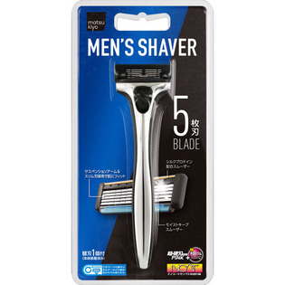
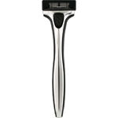

返回列表
产品名称：ｍａｔｓｕｋｉｙｏ メンズ カミソリホルダー ５枚刃

貝印カミソリ ｍａｔｓｕｋｉｙｏ メンズ カミソリホルダー ５枚刃 ホルダー＋替刃１個付
メーカー 貝印カミソリ
JANコード 4901331001826
商品の特徴
ダブルスムーザーにより抜群の潤いを実現したメンズカミソリホルダー５枚刃です。
替刃１個入りです。
成分・分量
【素材】
【ホルダー】ＡＢＳ樹脂、ＴＰＥ、ポリアセタール、ステンレス、鉄
【刃部】ステンレス刃物鋼、チタンコーティング、水溶性樹脂、吸水性樹脂、ＡＢＳ、ＴＰＥ
用法及び用量